2.2 Visualización con ggplot2
Utilizaremos el paquete ggplot2, fue desarrollado por Hadley Wickham y es
una implementación de la gramática de las gráficas (Wilkinson et al. 2005).
Gráficas de dispersión
library(ggplot2) # Cargamos el paquete en nuestra sesiónUsaremos el conjunto de datos mpg que se incluye en R, puedes encontrar
información de esta base de datos tecleando ?mpg.
data(mpg)
?mpg
glimpse(mpg)## Observations: 234
## Variables: 11
## $ manufacturer <chr> "audi", "audi", "audi", "audi", "audi", "audi", "...
## $ model <chr> "a4", "a4", "a4", "a4", "a4", "a4", "a4", "a4 qua...
## $ displ <dbl> 1.8, 1.8, 2.0, 2.0, 2.8, 2.8, 3.1, 1.8, 1.8, 2.0,...
## $ year <int> 1999, 1999, 2008, 2008, 1999, 1999, 2008, 1999, 1...
## $ cyl <int> 4, 4, 4, 4, 6, 6, 6, 4, 4, 4, 4, 6, 6, 6, 6, 6, 6...
## $ trans <chr> "auto(l5)", "manual(m5)", "manual(m6)", "auto(av)...
## $ drv <chr> "f", "f", "f", "f", "f", "f", "f", "4", "4", "4",...
## $ cty <int> 18, 21, 20, 21, 16, 18, 18, 18, 16, 20, 19, 15, 1...
## $ hwy <int> 29, 29, 31, 30, 26, 26, 27, 26, 25, 28, 27, 25, 2...
## $ fl <chr> "p", "p", "p", "p", "p", "p", "p", "p", "p", "p",...
## $ class <chr> "compact", "compact", "compact", "compact", "comp...Comencemos con nuestra primera gráfica:
ggplot(data = mpg) +
geom_point(mapping = aes(x = displ, y = hwy)) 
En ggplot2 se inicia una gráfica con la instrucción ggplot(), debemos
especificar explicitamente que base de datos usamos, este es el primer argumento
en la función ggplot. Una vez que creamos la base añadimos
capas, y dentro de aes() escribimos las variables que queremos
graficar y el atributo de la gráfica al que queremos mapearlas.
La función geom_point() añade una capa de puntos, hay muchas funciones
geometrías incluídas en ggplot2: geom_line(), geom_boxplot(),
geom_histogram,… Cada una acepta distintos argumentos para mapear las
variables en los datos a características estéticas de la gráfica. En el ejemplo
de arriba mapeamos displ al eje x, hwy al eje y, pero geom_point() nos
permite representar más variables usando la forma, color y/o tamaño del punto.
Esta flexibilidad nos permite entender o descubrir patrones más interesantes en
los datos.
ggplot(mpg) +
geom_point(aes(x = displ, y = hwy, color = class))
 Experimenta con los aesthetics color (color),
tamaño (size) y forma (shape).
Experimenta con los aesthetics color (color),
tamaño (size) y forma (shape).
¿Qué diferencia hay entre las variables categóricas y las continuas?
¿Qué ocurre cuando combinas varios aesthetics?
El mapeo de las propiedades estéticas se denomina escalamiento y depende del tipo de variable, las variables discretas (por ejemplo, genero, escolaridad, país) se mapean a distintas escalas que las variables continuas (variables numéricas como edad, estatura, etc.), los defaults para algunos atributos son (los escalamientos se pueden modificar):
| aes | Discreta | Continua |
|---|---|---|
Color (color) |
Arcoiris de colores | Gradiente de colores |
Tamaño (size) |
Escala discreta de tamaños | Mapeo lineal entre el área y el valor |
Forma (shape) |
Distintas formas | No aplica |
Transparencia (alpha) |
No aplica | Mapeo lineal a la transparencia |
Los geoms controlan el tipo de gráfica
p <- ggplot(mpg, aes(x = displ, y = hwy))
p + geom_line() # en este caso no es una buena gráfica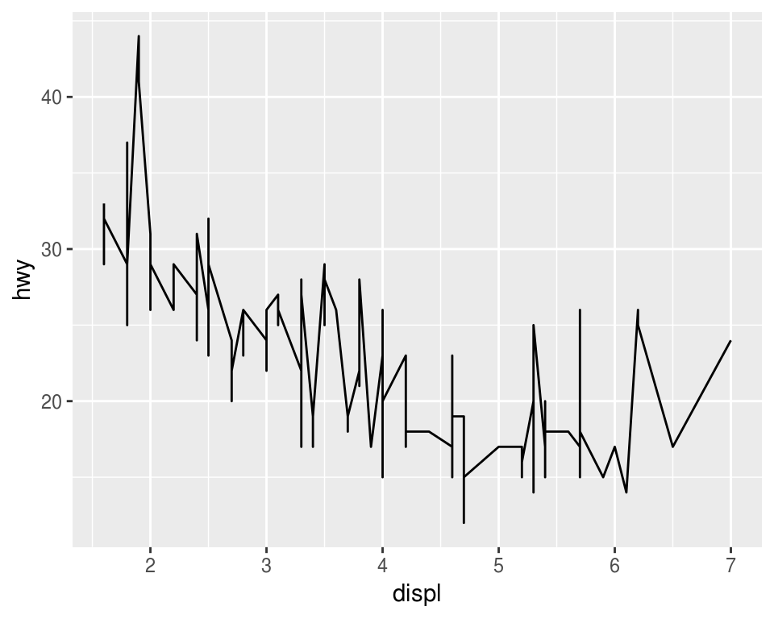
¿Qué problema tiene la siguiente gráfica?
p <- ggplot(mpg, aes(x = cty, y = hwy))
p + geom_point() 
p + geom_jitter() 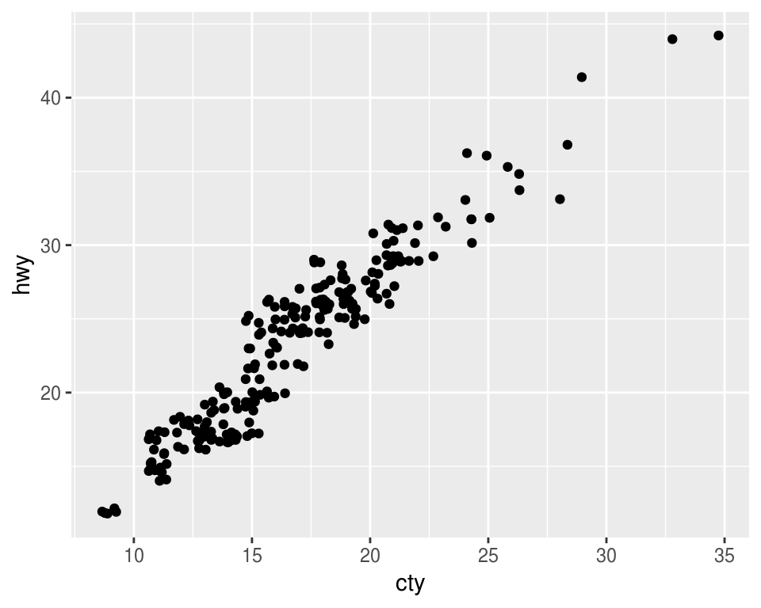
¿Cómo podemos mejorar la siguiente gráfica?
ggplot(mpg, aes(x = class, y = hwy)) +
geom_point() 
Intentemos reodenar los niveles de la variable clase
ggplot(mpg, aes(x = reorder(class, hwy), y = hwy)) +
geom_point() 
Podemos probar otros geoms.
ggplot(mpg, aes(x = reorder(class, hwy), y = hwy)) +
geom_jitter() 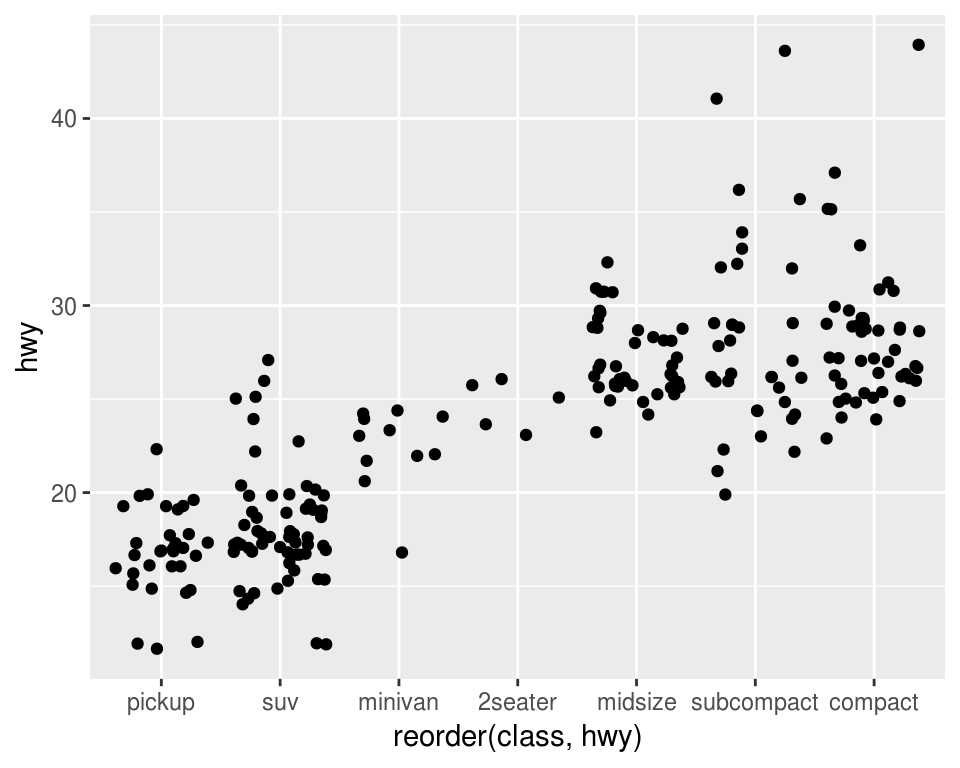
ggplot(mpg, aes(x = reorder(class, hwy), y = hwy)) +
geom_boxplot() 
También podemos usar más de un geom!
ggplot(mpg, aes(x = reorder(class, hwy), y = hwy)) +
geom_jitter() +
geom_boxplot()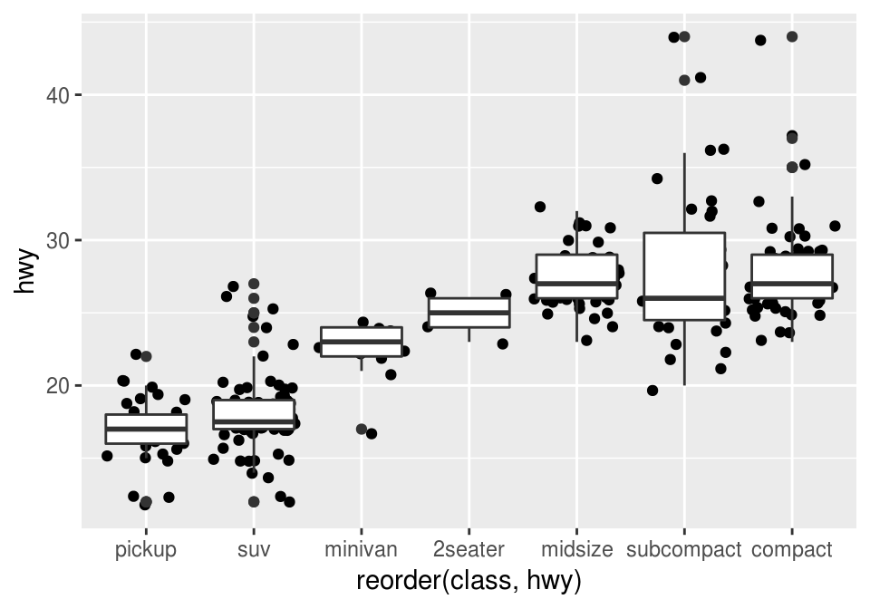
Lee la ayuda de reorder y repite las gráficas
anteriores ordenando por la mediana de hwy.
¿Cómo harías para graficar los puntos encima de las cajas de boxplot?
Paneles
Veamos ahora como hacer páneles de gráficas, la idea es hacer varios múltiplos de una gráfica donde cada múltiplo representa un subconjunto de los datos, es una práctica muy útil para explorar relaciones condicionales.
En ggplot podemos usar facet_wrap() para hacer paneles dividiendo los datos de acuerdo a las categorías de una sola variable
ggplot(mpg, aes(x = displ, y = hwy)) +
geom_jitter() +
facet_wrap(~ cyl)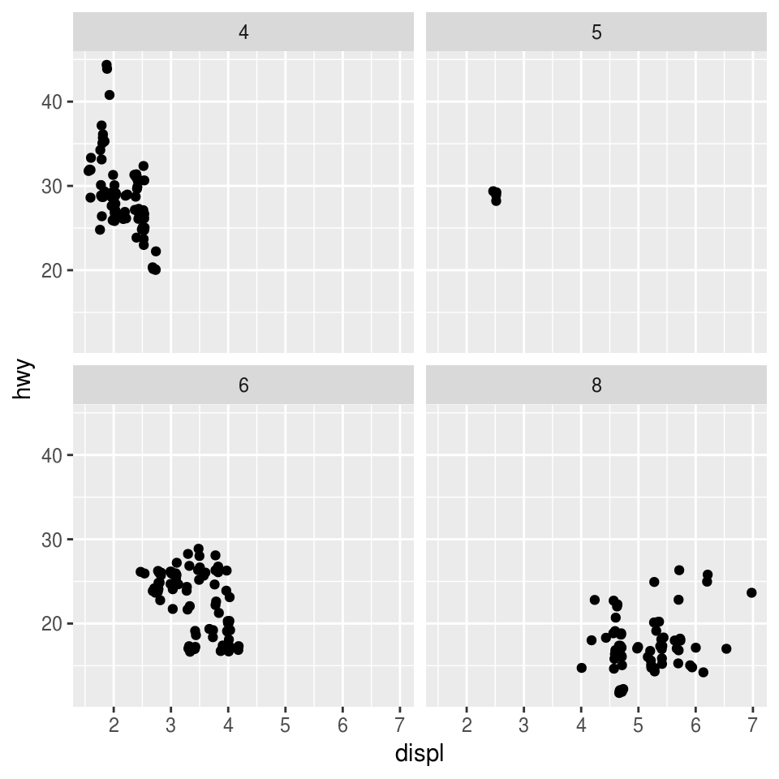
También podemos hacer una cuadrícula de 2 dimensiones usando facet_grid(filas~columnas)
ggplot(mpg, aes(x = displ, y = hwy)) +
geom_jitter() +
facet_grid(.~ class)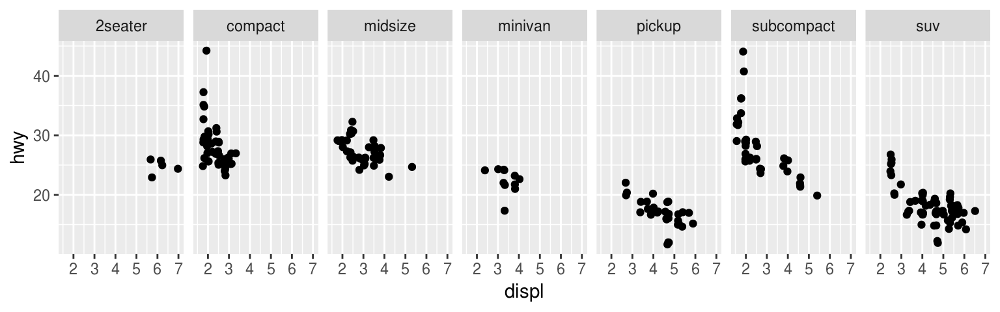
ggplot(mpg, aes(x = displ, y = hwy)) +
geom_jitter() +
facet_grid(drv ~ class)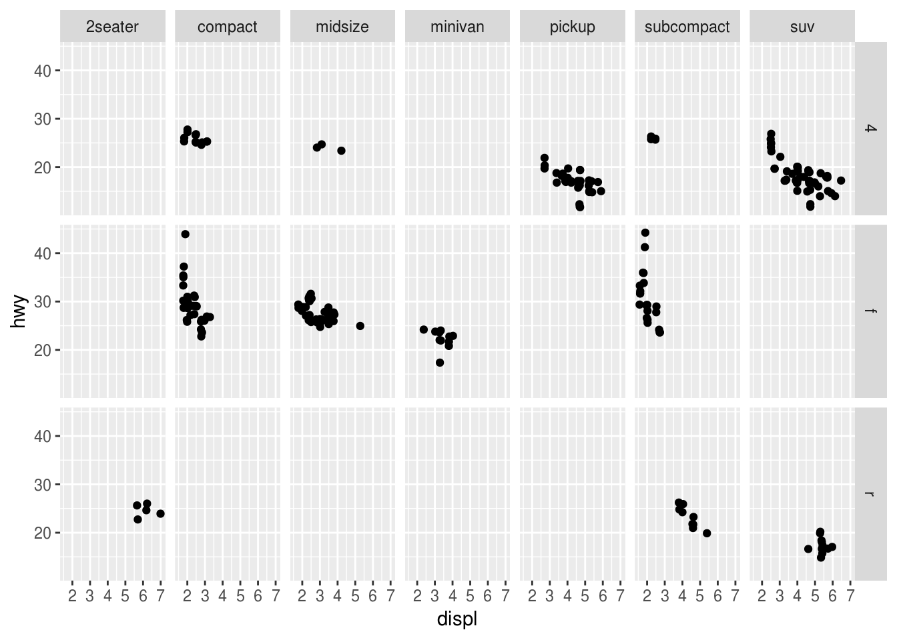
Los páneles pueden ser muy útiles para entender relaciones en nuestros datos. En la siguiente gráfica es difícil entender si existe una relación entre radiación solar y ozono.
data(airquality)
ggplot(airquality, aes(x = Solar.R, y = Ozone)) +
geom_point() ## Warning: Removed 42 rows containing missing values (geom_point).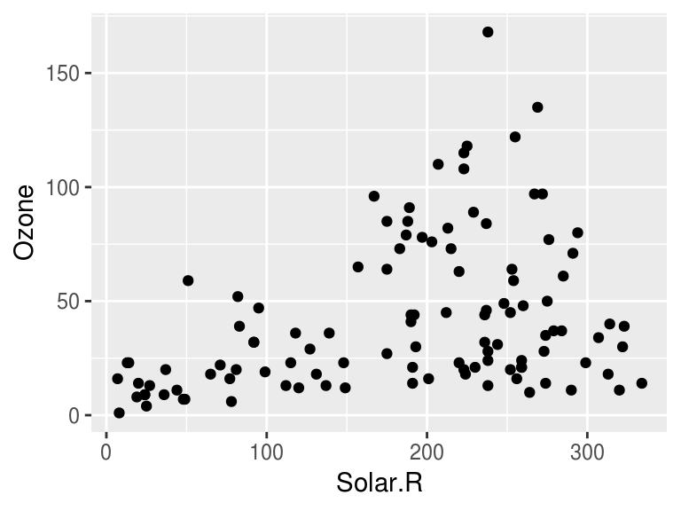
Veamos que ocurre si realizamos páneles separando por velocidad del viento.
library(Hmisc)
airquality$Wind.cat <- cut2(airquality$Wind, g = 3)
ggplot(airquality, aes(x = Solar.R, y = Ozone)) +
geom_point() +
facet_wrap(~ Wind.cat)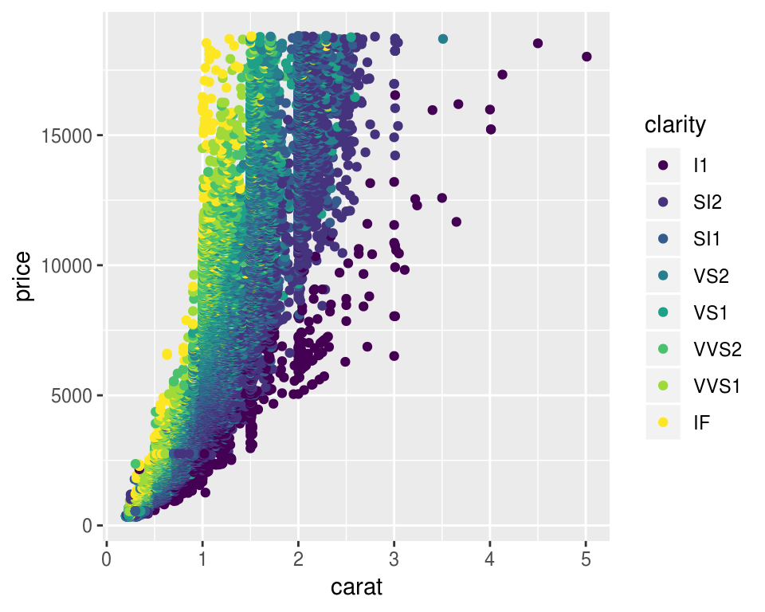
Podemos agregar un suavizador (loess) para ver mejor la relación de las variables en cada panel.
ggplot(airquality, aes(x = Solar.R, y = Ozone)) +
geom_point() +
facet_wrap(~ Wind.cat) +
geom_smooth(method = "lm")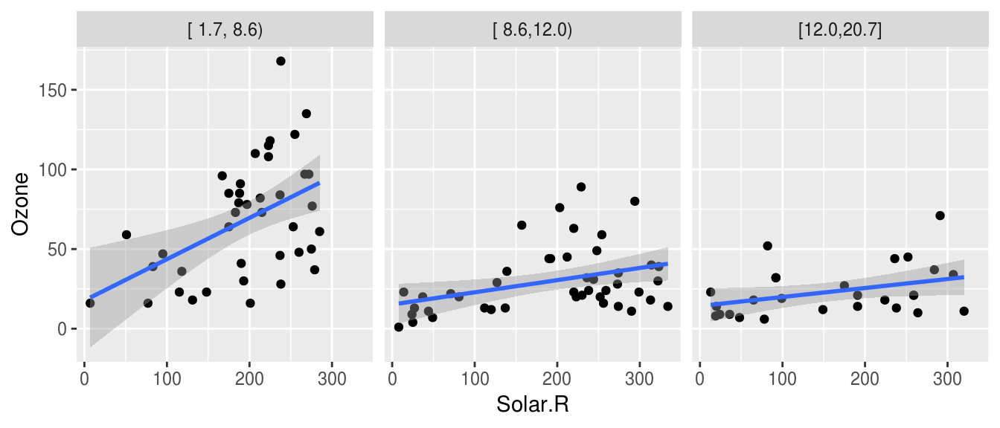
Escribe algunas preguntas que puedan contestar con
estos datos.
En ocasiones es necesario realizar transformaciones u obtener subconjuntos de los datos para poder responder preguntas de nuestro interés.
library(dplyr)
library(babynames)
glimpse(babynames)## Observations: 1,858,689
## Variables: 5
## $ year <dbl> 1880, 1880, 1880, 1880, 1880, 1880, 1880, 1880, 1880, 188...
## $ sex <chr> "F", "F", "F", "F", "F", "F", "F", "F", "F", "F", "F", "F...
## $ name <chr> "Mary", "Anna", "Emma", "Elizabeth", "Minnie", "Margaret"...
## $ n <int> 7065, 2604, 2003, 1939, 1746, 1578, 1472, 1414, 1320, 128...
## $ prop <dbl> 0.072384329, 0.026679234, 0.020521700, 0.019865989, 0.017...Supongamos que queremos ver la tendencia del nombre “John”, para ello debemos generar un subconjunto de la base de datos. ¿Qué ocurre en la siguiente gráfica?
babynames_John <- filter(babynames, name == "John")
ggplot(babynames_John, aes(x = year, y = prop)) +
geom_point()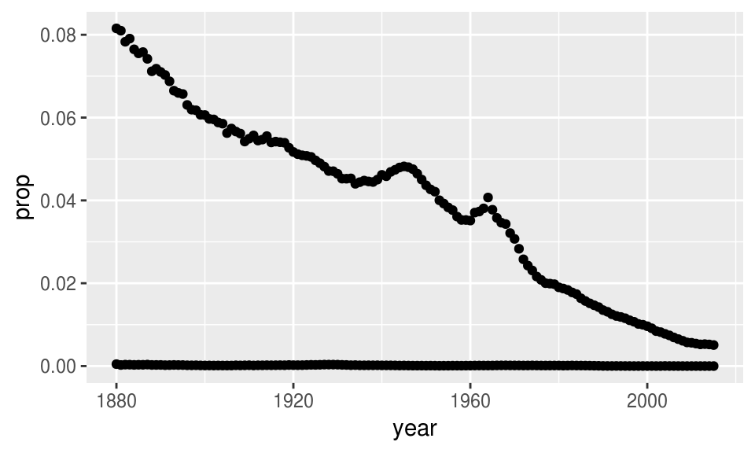
ggplot(babynames_John, aes(x = year, y = prop, color = sex)) +
geom_line()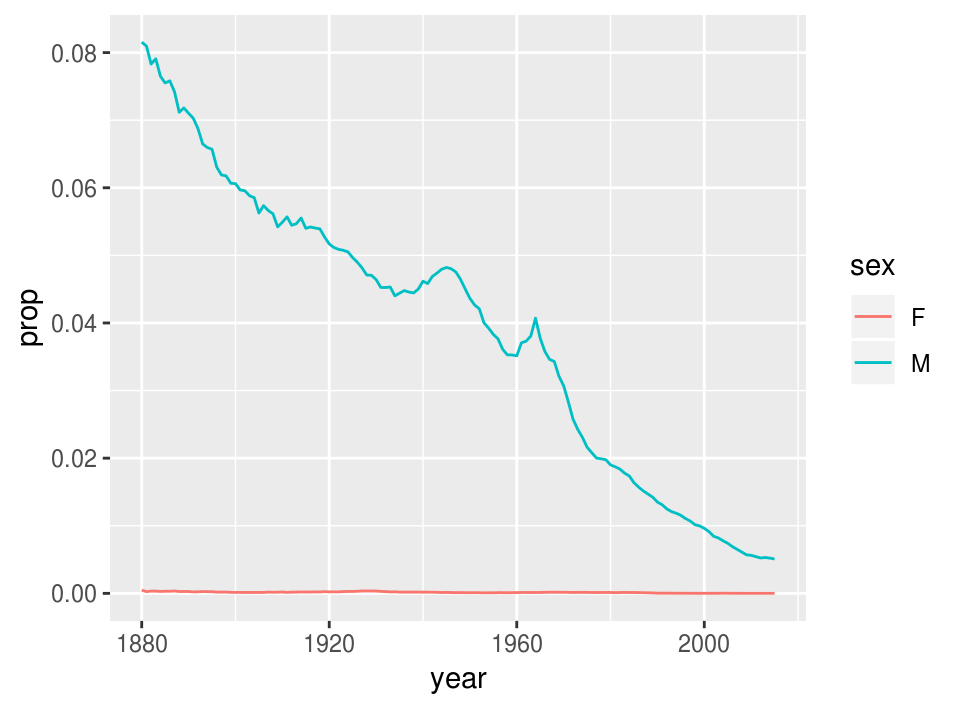
La preparación de los datos es un aspecto muy importante del análisis y suele ser la fase que lleva más tiempo. Es por ello que el siguiente tema se enfocará en herramientas para hacer transformaciones de manera eficiente.
 Tarea. Explora la base de datos gapminder, estos
datos están incluidos en el paquete del mismo nombre, para acceder a ellos basta
con cargar el paquete:
Tarea. Explora la base de datos gapminder, estos
datos están incluidos en el paquete del mismo nombre, para acceder a ellos basta
con cargar el paquete:
# install.packages("gapminder")
library(gapminder)
gapminder## # A tibble: 1,704 x 6
## country continent year lifeExp pop gdpPercap
## <fct> <fct> <int> <dbl> <int> <dbl>
## 1 Afghanistan Asia 1952 28.8 8425333 779.
## 2 Afghanistan Asia 1957 30.3 9240934 821.
## 3 Afghanistan Asia 1962 32.0 10267083 853.
## 4 Afghanistan Asia 1967 34.0 11537966 836.
## 5 Afghanistan Asia 1972 36.1 13079460 740.
## 6 Afghanistan Asia 1977 38.4 14880372 786.
## 7 Afghanistan Asia 1982 39.9 12881816 978.
## 8 Afghanistan Asia 1987 40.8 13867957 852.
## 9 Afghanistan Asia 1992 41.7 16317921 649.
## 10 Afghanistan Asia 1997 41.8 22227415 635.
## # ... with 1,694 more rows realiza al
menos 3 gráficas y explica las relaciones que encuentres. Debes usar lo que
revisamos en estas notas: al menos una de las gráficas debe ser de páneles,
realiza una gráfica con datos de México, y (opcional)si lo consideras
interesante, puedes crear una variable categórica utilizando la función cut2
del paquete Hmisc.
Recursos
- El libro R for Data Science (Wickham and Grolemund 2017) tiene un capítulo de visualización.
- Google, stackoverflow
tiene un tag para ggplot2.
- Documentación con ejemplos en la página de ggplot2.
- Otro recurso muy útil es el
acordeón de ggplot.
- La teoría detrás de ggplot2 se explica en el libro de ggplot2 (Wickham 2009),
Referencias
Wilkinson, L., D. Wills, D. Rope, A. Norton, and R. Dubbs. 2005. The Grammar of Graphics. Statistics and Computing. Springer New York. https://books.google.com.mx/books?id=\_kRX4LoFfGQC.
Wickham, Hadley, and Garrett Grolemund. 2017. R for Data Science: Import, Tidy, Transform, Visualize, and Model Data. 1st ed. O’Reilly Media, Inc.
Wickham, Hadley. 2009. Ggplot2: Elegant Graphics for Data Analysis. 2nd ed. Springer Publishing Company, Incorporated.